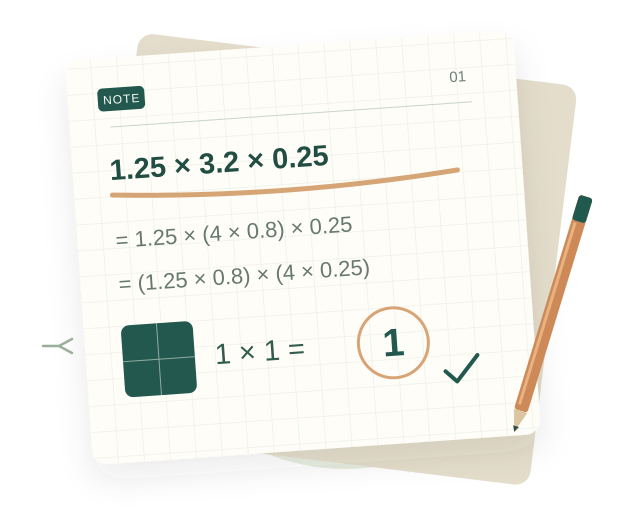

一本持续生长的数学手册
从一张试卷，
到一整个学期。
把每一次备课、每一节课堂里的知识与方法，
整理成随时可以翻阅的学习路径。
从理解一道题，开始连接更多的数学。
备课有思路·课堂有方法·复习有线索

观察 → 理解 → 应用01 / PREPARE
备课资料
试卷解答、逐题考点与讲解思路
2 份已收录
02 / LEARN
课堂章节
按上课内容，逐章积累知识与方法
随课堂陆续更新
03 / EXPLORE
阅读与使用
在线阅读、图解核对与打印备课
随时翻阅
LATEST NOTES
最近整理
HOW TO USE
一份资料，三种打开方式
顺着自己的节奏，找到需要的内容。
01
课前，梳理方法
阅读逐题解析，明确考点、解题依据与容易出错的地方。
02
做完，核对答案
跳转到答案速查，再结合图形示意检查过程与方向。
03
课堂，随时翻阅
手机或电脑都能阅读，也可以下载讲义、打印后使用。